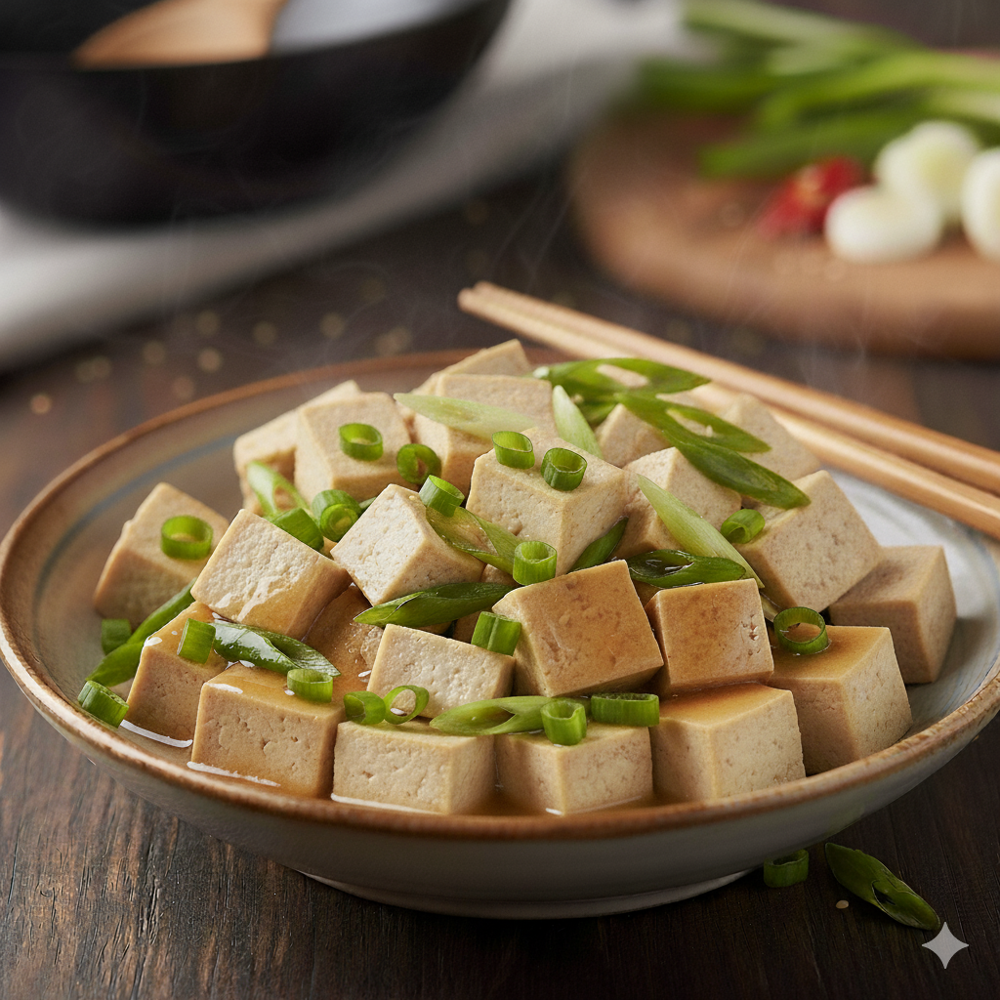

My grandma's tofu
Background/intro

Image AI generated from gemini since I couldn't find an image...
This is my second recipe! I hope nobody sees this and steals it... but yeah.
This is my mom's mom's tofu recipe. I have no idea where she got it from,
and I can't really ask her. Maybe she got it from her relatives, or made it?
My dad has been making this tofu for the family for as long as I can
remember. It's really good, and you usually make it as a side dish paired
with rice and something else. "Great comfort food." -My dad again...
Tips
- The tofu is really soft... so cut it however you like.
- Don't stir too hard and break the tofu!!!
| Ingredients |
|
| 16 oz soft tofu |
| 2 green onions |
| 1 tbsp neutral cooking oil |
| 3/4 teaspoon hon dashi |
| 1 tbsp cornstarch |
| 1/2 tbsp Shaoxing cooking wine |
| 1/2 teaspoon white pepper |
| 1/2 teaspoon sesame oil |
| 1 tbsp soy sauce |
| 1 tbsp water |
Instructions
- Slice the green onion and separate the white and green parts
- Dice the tofu into 1/3 inch cubes
- Mix all sauce ingredients together in a cup or bowl.
- Heat 1 tablespoon cooking oil in a medium pan at medium heat
- Add white portion of green onions to pan and saute for 30 seconds
- Add diced tofu to the pan and saute and stir gently until heated, about 1 minute
- Stir in well mixed sauce ingredients into pan
- Saute and stir gently until sauce thickens and coats all the tofu
- Turn off the heat and add stir in green part of green onions
Time to make this recipe
Prep time: 10-15 mins
Cook time: 5 minutes
Servings: 5